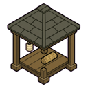
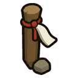

Home › Fighting › Stances and squads
Stances and squads
Drafted ninja can be given a combat stance, a whole squad can focus one enemy, groups can march in formation, guards can stand duty and walk patrols, and medical ninja look after the fallen on their own. None of it ever cuts into a technique being cast, a combo, or an order you gave: it only steers a drafted pawn that is standing by.
Give drafted ninja a combat stance, mark a priority target, march in formation, set guard posts and patrols, and let medical ninja tend the fallen. Badly hurt pawns fall back on their own. None of it interrupts a cast or a combo.
Ninja orders
A selected ninja shows one Ninja orders button instead of a row of NFRP buttons. It opens a small ring at the mouse with Combo, Kit, Sidearm, Throw tool, Formation, Fall back,

Guard post and Stance; each slice shows its current value, or "mixed" when the selected pawns differ. Stance and Mark as priority also stay on the bar. Esc closes the ring. Only NFRP's own buttons are grouped: vanilla, World of Naruto and other mods' buttons stay where they are. To get the separate buttons back, turn off Group NFRP orders into one button (settings › Combat › Ninja orders).Combat stances
Select drafted ninja and use the Stance button.
| Stance | Prefers | Moves |
|---|---|---|
| Default | your orders, as before | only when you say |
| Vanguard | taijutsu and melee techniques that build up the enemy's break meter | closes in on the priority target or the nearest enemy |
| Support | heals and buffs first, then control | steps back when an enemy gets close |
| Assassin | the priority target, enemy ninja and Bingo Book names; avoids area techniques | slips out of sight and waits |
| Sealer | binds, stuns and seals | keeps a sensible distance |
| Barrage | ranged and area ninjutsu, as often as chakra and cooldowns allow; keeps about 10% chakra unless the target is broken or marked; holds back big area techniques when an ally stands next to the enemy | stays at the best range of its techniques, steps back when an enemy comes within about 6 cells, prefers cover |
Ambush: an Assassin who has been out of every enemy's sight for about 5 seconds is *ambush ready*: the first strike hits truer and harder. The edge fades a few seconds after it is spotted.
Priority target
Right-click an enemy with your pawns selected and choose Mark … as priority, or select the enemy and press Mark as priority. A red ring marks it. Stances aim at it and any drafted pawn whose weapon reaches it fires at it. It clears when the enemy goes down.
Formations
Select two or more drafted pawns and use Formation: wedge, diamond, line or ring. A genin team's sensei leads if the team is selected; otherwise the first pawn you picked. Move the leader and the others keep their places. Pawns holding their place in a fight get the team in sync bonus. A place that would be behind a wall moves to the nearest cell the leader can see and reach.
Guard posts and patrols
Build a guard post and

patrol markers from the Security tab. Give a post and its markers the same colour to make a route, and number the stops. Turn on the Guard work type for the pawns who should stand watch (it starts off for everyone).A guard takes the first post of the route, faces the way you set, waits there, then walks to the next stop. With hold fire on, the guard waits until an enemy steps inside the post's ring, then attacks with a technique or a weapon and goes back on duty afterwards. Use Draw hold-fire area on the post to drag extra cells (a doorway, a bridge): an enemy inside them counts too. Clear area removes it. Assassin-stance guards build up the ambush bonus while they wait unseen.
Medical ninja
A drafted ninja who knows a healing technique heals downed allies when no enemy is close. With no heal ready, they carry the fallen to a bed, or tend them on the spot.
Wounded retreat
A badly hurt pawn falls back instead of fighting to the death. Its condition is the worst of its overall health, pain, blood loss and any vital part about to give out.
Each colonist has a Fall back button:
| Setting | Falls back at about |
|---|---|
| Off | never |
| Cautious | 60% condition |
| Normal (default) | 40% |
| Last stand | 20% |
Stances shift the point: Vanguard holds on 10% longer, Support, Sealer and Barrage leave 10% sooner, Assassin 5% sooner.
- Where to: a free bed (a medical bed first) well away from the fight, otherwise a covered cell out of the enemy's sight, behind friends, reached without running past the enemy. The pawn calls "Falling back!" and runs.
- Never: in the middle of a technique or combo (it waits for it to end), while broken, when an equally fast enemy is right beside it (cornered), or when nowhere is safe. Then it fights on.
- Back in the fight: once it has healed 15% above its fall-back point. A drafted pawn stays drafted where it is. In cover it tends its own wounds if it can.
- Your orders win: give the pawn any order and it won't fall back for the next 10 seconds.
- Allies and enemies fall back too. Badly hurt enemies run for the edge of the map, and an enemy ninja who gets away can come back as a rival.
- Falling back is not fleeing: it costs no fame.
Settings
In the mod settings, under Wounded retreat: the master switch, colonists, allies and enemies separately, colonist messages, and the default fall-back point. If Rules of Engagement is loaded, it decides when your colonists fall back unless you set a pawn's own button.
In the mod settings, under Stances and squads: combat stances, priority target, formations, guard posts and patrols, and the medic rule can each be switched off.
If Rules of Engagement is in your mod list, it handles movement, priority targets, formations, guards and medics; NFRP stands those parts down and stances only choose which techniques your ninja use.